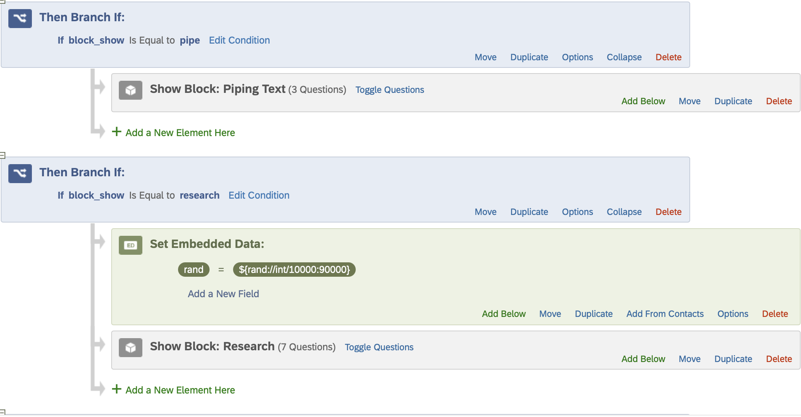
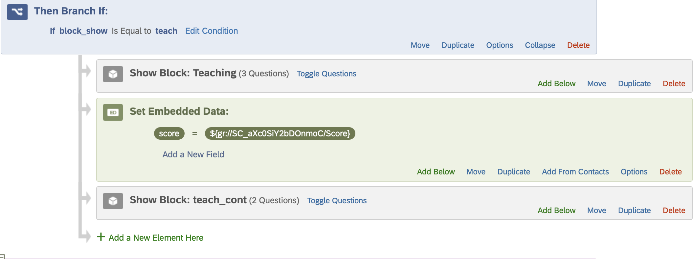
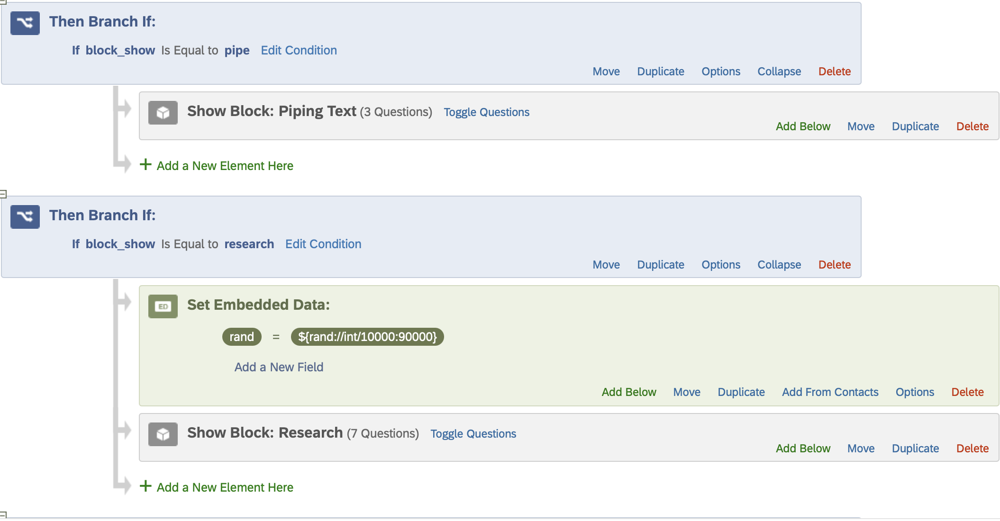
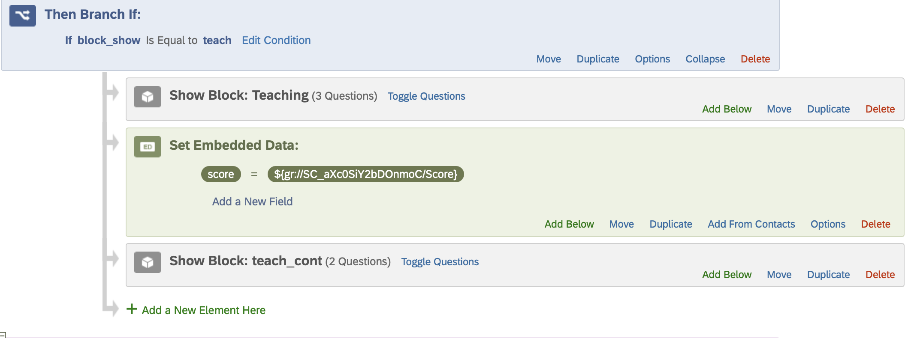
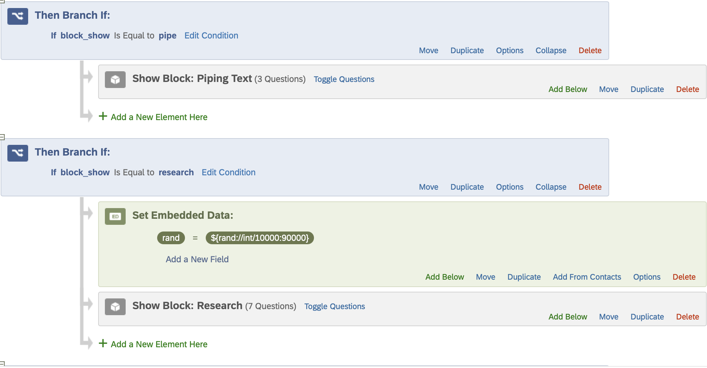
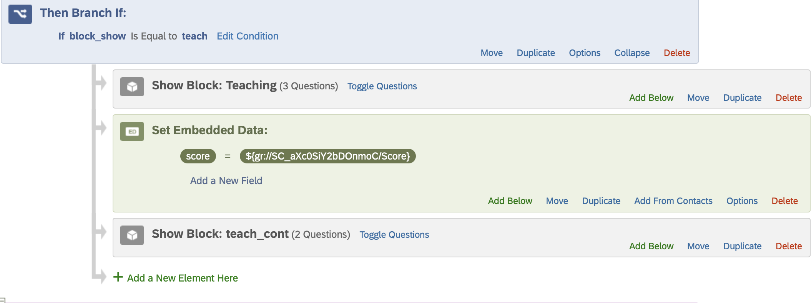
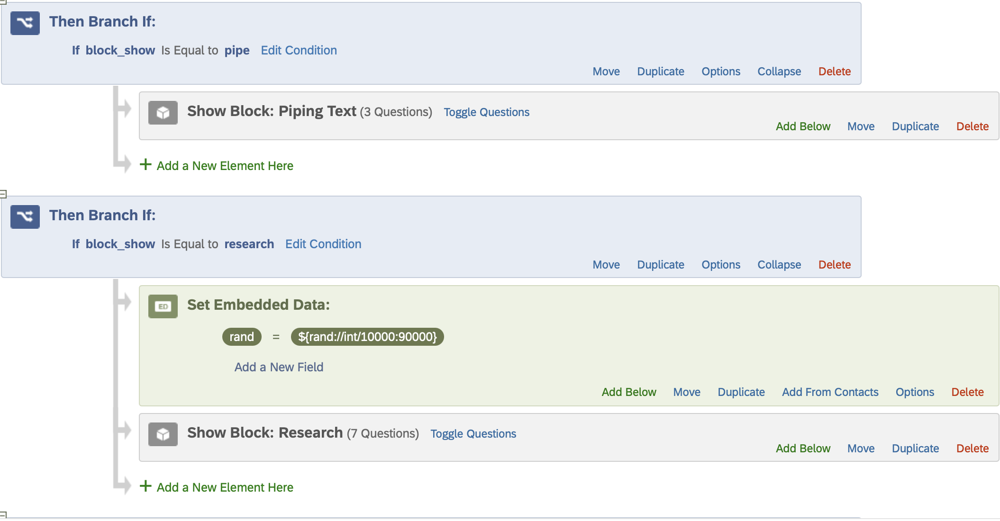
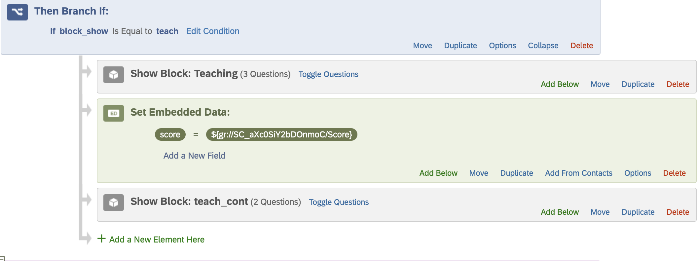

Beyond Surveys: Using Qualtrics for Teaching and Research
Faculty Center Workshop, Nov. 4, 2025
Dave Brocker
Farmingdale State College
Welcome & Setup
This workshop assumes you’ve used Qualtrics before, but want to move beyond basic survey design to implement logic, data embedding, and custom scripting. Specifically, we will cover:
Welcome & Setup
Content Validation: Ensure that only certain values are ‘allowed’ and recorded
Piping Text: Pass previous and nuanced values into later questions
Survey Flow: Add randomization, branching, and embedded data into your survey workflow
Embedding Data: Create custom variables that can be used for validation, or as logic requirements
Custom CSS, HTML, and Javascript:Fully customize your survey
Part I : Teaching Applications: Enhancing Engagement & Feedback
Teaching Applications
Content Validation
Create criteria for ‘successful’ answer attempts
Lock-In Participants After Withdrawing Consent
Restrict Numeric, Email, and Text Responses
Use Regular Expressions
Live-Navigation Guide
Behind the Scenes!
  
 
Teaching Applications
Text Piping
Personalized feedback: “Hi [Name], your score was [Score], here’s what that means.”
When asked for your favorite song, you said [Song]. Can you tell me what the song means to you?
Teaching Applications
Branching Logic
- Gather relevant insight and bypass unneeded options
Teaching Applications
Embedded Data
Part II - Research Applications: Turning Surveys into Experiments
Research Applications
Random Assignment
Research Applications
Random Assignment
Research Applications
Display Logic
Research Applications
Embedded Data
- Store participant metadata (e.g., ID, condition).
Research Applications
Display Logic
Mini Challenge:
Create a two-condition experiment using branching and embedded data.
The Bridge – Connecting Teaching & Research
  
 